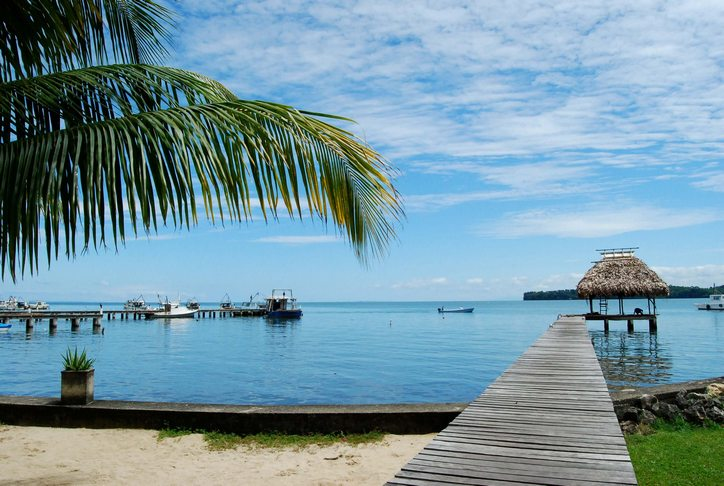

Livingston es un pueblo caribeño único en Guatemala, accesible únicamente por vía fluvial desde Río Dulce o Puerto Barrios.
Se caracteriza por su vibrante cultura garífuna, sus playas de arena blanca y su ambiente relajado y multicultural.
Ubicación: Departamento de Izabal, en la desembocadura del Río Dulce hacia el Caribe.
Actividades: Disfrutar de playas como Playa Blanca, conocer la cultura garífuna, degustar el tapado, explorar Siete Altares y vivir la música y danza local.
